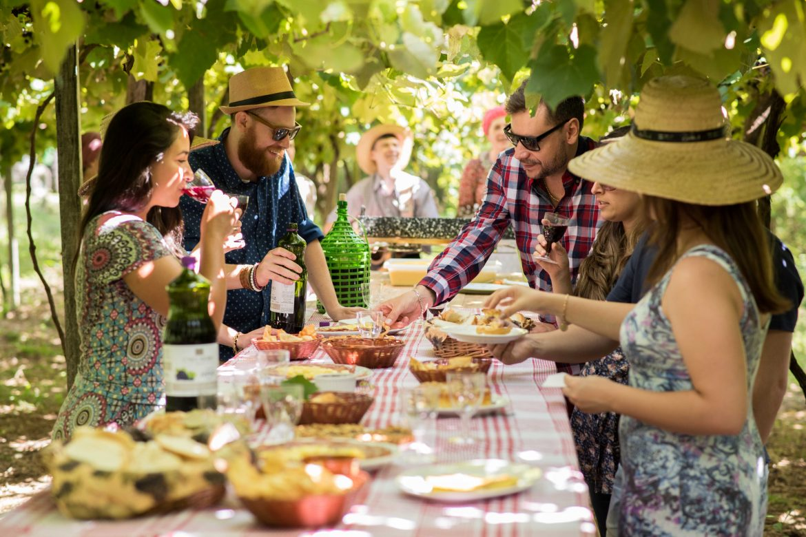
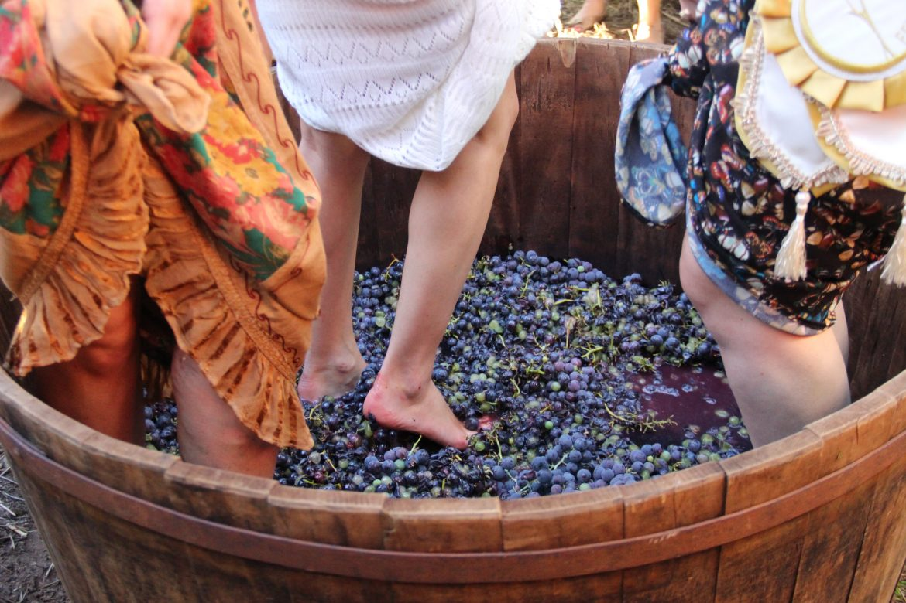
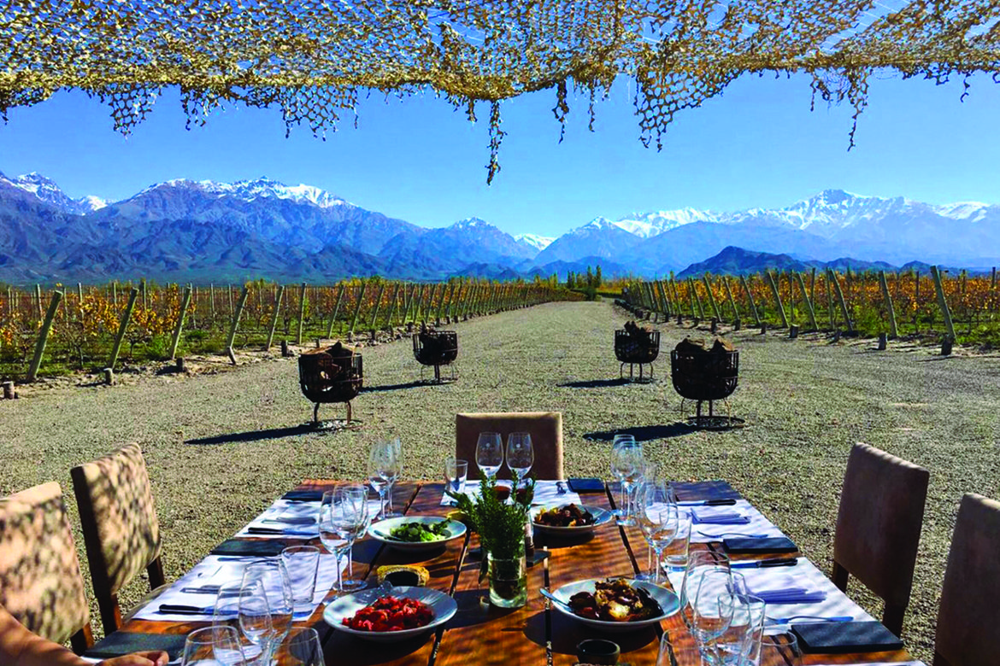
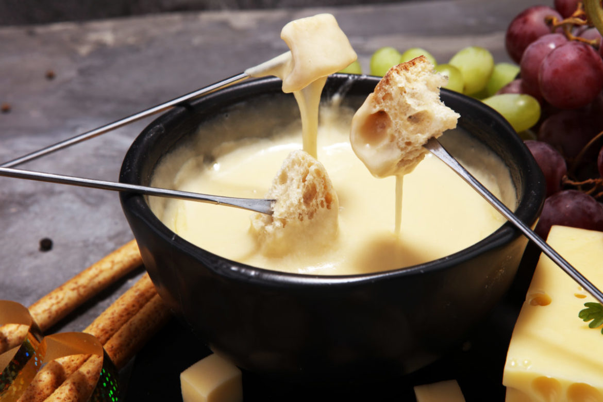

Concha Y Toro, maior produtora de vinhos da América Latina, lança curso online na quarentena
As aulas disponibilizadas no You Tube pela maior produtora de vinhos ensina desde a história da bebida até detalhes mais sutis.
...leia maisVinho tinto pode ajudar no combate à depressão
A ciência comprova a ideia popular de que tomar uma taça de vinho tinto por dia faz bem, pois substância presente nas cascas das uvas bloqueia enzima relacionada ao controle de estresse no cérebro.
...leia maisFesta anual da pisa na uva em São Roque
A Festa é uma imersão na cultura portuguesa, regada a música, vinho e gastronomia. A cada ano a festa da pisa na uva da Quinta do Olivardo, em São Roque (60 km de SP), atrai mais visitantes.
...leia maisSerra Gaúcha: cinco vinícolas que valem a visita no Vale dos Vinhedos e regiãos
A Serra Gaúcha possui mais de 550 vinícolas. Então, como planejar um roteiro por essa região, que é a maior produtora de vinhos do Brasil? O que vale a pena visitar? Como montar uma viagem ao Vale dos Vinhedos?
...leia maisGuia completo de harmonização para uma noite de queijos e vinhos
Com o inverno chegando... receber os amigos ou alguém especial em casa para uma noite de bons vinhos e queijos passa a ser um dos programas preferidos de apreciadores de bons rótulos.
...leia maisVinhos do mês:
Outras notícias:
Vinho armazenado há mais de 15 anos é transformado em álcool 70%
Bebida estava armazenada no Instituto Federal da Bento Gonçalves em razão de um processo judicial.
Continuar lendoColheita mecanizada de uva
A colheita da uva no Brasil ainda é feita de forma manual na maioria dos parreirais.
Continuar lendoPodcasts: Clique aqui.
Adegas
Produção
Terroir
Loja
Vinhos
Uvas
Somelier
Eventos
Raridades